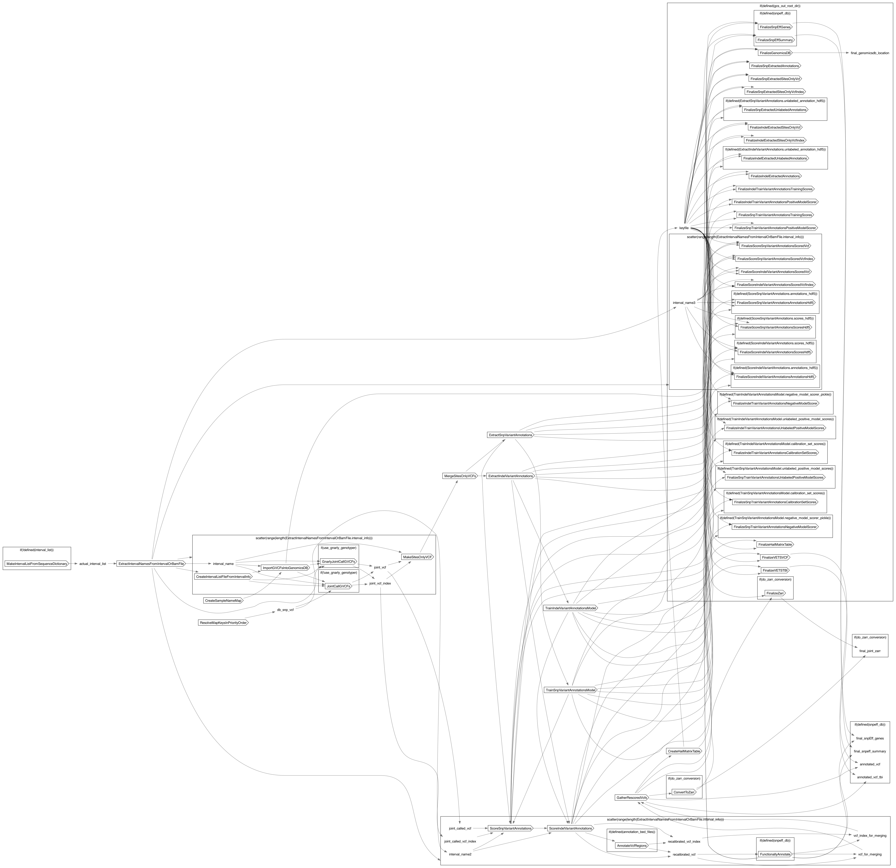

SRJointCallGVCFsWithGenomicsDB
SRJointCallGVCFsWithGenomicsDB
- author
- Jonn Smith
- description
- A workflow that performs joint calling on single-sample gVCFs from GATK4 HaplotypeCaller using GenomicsDB.
Inputs
Required
gvcf_indices(Array[File], required): Array of gvcf index files forgvcfs. Order should correspond to that ingvcfs.gvcfs(Array[File], required): Array of GVCF files to use as inputs for joint calling.indel_is_calibration(Array[Boolean], required): Array of booleans indicating which files inindel_known_reference_variantsshould be used as calibration sets. True ->calibration set. False -> NOT a calibration set.indel_is_training(Array[Boolean], required): Array of booleans indicating which files inindel_known_reference_variantsshould be used as training sets. True -> training set. False -> NOT a training set.indel_known_reference_variants(Array[File], required): Array of VCF files to use as input reference variants for INDELs. Each can be designated as either calibration or training usingindel_is_trainingandindel_is_calibration.indel_known_reference_variants_identifier(Array[File], required): Array of names to give to the VCF files given inindel_known_reference_variants. Order should correspond to that inindel_known_reference_variants.indel_known_reference_variants_index(Array[File], required): Array of VCF index files forindel_known_reference_variants. Order should correspond to that inindel_known_reference_variants.prefix(String, required): Prefix to use for output files.ref_map_file(File, required): Reference map file indicating reference sequence and auxillary file locationssnp_is_calibration(Array[Boolean], required): Array of booleans indicating which files insnp_known_reference_variantsshould be used as calibration sets. True ->calibration set. False -> NOT a calibration set.snp_is_training(Array[Boolean], required): Array of booleans indicating which files insnp_known_reference_variantsshould be used as training sets. True -> training set. False -> NOT a training set.snp_known_reference_variants(Array[File], required): Array of VCF files to use as input reference variants for SNPs. Each can be designated as either calibration or training usingsnp_is_trainingandsnp_is_calibration.snp_known_reference_variants_identifier(Array[File], required): Array of names to give to the VCF files given insnp_known_reference_variants. Order should correspond to that insnp_known_reference_variants.snp_known_reference_variants_index(Array[File], required): Array of VCF index files forsnp_known_reference_variants. Order should correspond to that insnp_known_reference_variants.
Optional
annotation_bed_file_annotation_names(Array[String]?): Array of names/FILTER column entries to use for each given file inannotation_bed_files. Order should correspond toannotation_bed_files.annotation_bed_file_indexes(Array[File]?): Array of bed indexes forannotation_bed_files. Order should correspond toannotation_bed_files.annotation_bed_files(Array[File]?): Array of bed files to use to FILTER/annotate variants in the output file. Annotations will be placed in the FILTER column, effectively filtering variants that overlap these regions.background_sample_gvcf_indices(Array[Array[File]]?): Array of GVCF index files forbackground_sample_gvcfs. Order should correspond to that inbackground_sample_gvcfs.background_sample_gvcfs(Array[Array[File]]?): Array of GVCFs to use as background samples for joint calling.gcs_out_root_dir(String?): GCS Bucket into which to finalize outputs. If no bucket is given, outputs will not be finalized and instead will remain in their native execution location.interval_list(File?)snpeff_db(File?)snpeff_db_identifier(String?)AnnotateVcfRegions.runtime_attr_override(RuntimeAttr?)ConvertToZarr.ref_fai(String?)ConvertToZarr.ref_fasta(String?)ConvertToZarr.runtime_attr_override(RuntimeAttr?)CreateHailMatrixTable.runtime_attr_override(RuntimeAttr?)CreateIntervalListFileFromIntervalInfo.runtime_attr_override(RuntimeAttr?)CreateSampleNameMap.runtime_attr_override(RuntimeAttr?)ExtractIndelVariantAnnotations.runtime_attr_override(RuntimeAttr?)ExtractIntervalNamesFromIntervalOrBamFile.runtime_attr_override(RuntimeAttr?)ExtractSnpVariantAnnotations.runtime_attr_override(RuntimeAttr?)FinalizeGenomicsDB.runtime_attr_override(RuntimeAttr?)FinalizeHailMatrixTable.name(String?)FinalizeHailMatrixTable.runtime_attr_override(RuntimeAttr?)FinalizeIndelExtractedAnnotations.name(String?)FinalizeIndelExtractedAnnotations.runtime_attr_override(RuntimeAttr?)FinalizeIndelExtractedSitesOnlyVcf.name(String?)FinalizeIndelExtractedSitesOnlyVcf.runtime_attr_override(RuntimeAttr?)FinalizeIndelExtractedSitesOnlyVcfIndex.name(String?)FinalizeIndelExtractedSitesOnlyVcfIndex.runtime_attr_override(RuntimeAttr?)FinalizeIndelExtractedUnlabeledAnnotations.name(String?)FinalizeIndelExtractedUnlabeledAnnotations.runtime_attr_override(RuntimeAttr?)FinalizeIndelTrainVariantAnnotationsCalibrationSetScores.name(String?)FinalizeIndelTrainVariantAnnotationsCalibrationSetScores.runtime_attr_override(RuntimeAttr?)FinalizeIndelTrainVariantAnnotationsNegativeModelScorer.name(String?)FinalizeIndelTrainVariantAnnotationsNegativeModelScorer.runtime_attr_override(RuntimeAttr?)FinalizeIndelTrainVariantAnnotationsPositiveModelScorer.name(String?)FinalizeIndelTrainVariantAnnotationsPositiveModelScorer.runtime_attr_override(RuntimeAttr?)FinalizeIndelTrainVariantAnnotationsTrainingScores.name(String?)FinalizeIndelTrainVariantAnnotationsTrainingScores.runtime_attr_override(RuntimeAttr?)FinalizeIndelTrainVariantAnnotationsUnlabeledPositiveModelScores.name(String?)FinalizeIndelTrainVariantAnnotationsUnlabeledPositiveModelScores.runtime_attr_override(RuntimeAttr?)FinalizeScoreIndelVariantAnnotationsAnnotationsHdf5.name(String?)FinalizeScoreIndelVariantAnnotationsAnnotationsHdf5.runtime_attr_override(RuntimeAttr?)FinalizeScoreIndelVariantAnnotationsScoredVcf.name(String?)FinalizeScoreIndelVariantAnnotationsScoredVcf.runtime_attr_override(RuntimeAttr?)FinalizeScoreIndelVariantAnnotationsScoredVcfIndex.name(String?)FinalizeScoreIndelVariantAnnotationsScoredVcfIndex.runtime_attr_override(RuntimeAttr?)FinalizeScoreIndelVariantAnnotationsScoresHdf5.name(String?)FinalizeScoreIndelVariantAnnotationsScoresHdf5.runtime_attr_override(RuntimeAttr?)FinalizeScoreSnpVariantAnnotationsAnnotationsHdf5.name(String?)FinalizeScoreSnpVariantAnnotationsAnnotationsHdf5.runtime_attr_override(RuntimeAttr?)FinalizeScoreSnpVariantAnnotationsScoredVcf.name(String?)FinalizeScoreSnpVariantAnnotationsScoredVcf.runtime_attr_override(RuntimeAttr?)FinalizeScoreSnpVariantAnnotationsScoredVcfIndex.name(String?)FinalizeScoreSnpVariantAnnotationsScoredVcfIndex.runtime_attr_override(RuntimeAttr?)FinalizeScoreSnpVariantAnnotationsScoresHdf5.name(String?)FinalizeScoreSnpVariantAnnotationsScoresHdf5.runtime_attr_override(RuntimeAttr?)FinalizeSnpEffGenes.runtime_attr_override(RuntimeAttr?)FinalizeSnpEffSummary.runtime_attr_override(RuntimeAttr?)FinalizeSnpExtractedAnnotations.name(String?)FinalizeSnpExtractedAnnotations.runtime_attr_override(RuntimeAttr?)FinalizeSnpExtractedSitesOnlyVcf.name(String?)FinalizeSnpExtractedSitesOnlyVcf.runtime_attr_override(RuntimeAttr?)FinalizeSnpExtractedSitesOnlyVcfIndex.name(String?)FinalizeSnpExtractedSitesOnlyVcfIndex.runtime_attr_override(RuntimeAttr?)FinalizeSnpExtractedUnlabeledAnnotations.name(String?)FinalizeSnpExtractedUnlabeledAnnotations.runtime_attr_override(RuntimeAttr?)FinalizeSnpTrainVariantAnnotationsCalibrationSetScores.name(String?)FinalizeSnpTrainVariantAnnotationsCalibrationSetScores.runtime_attr_override(RuntimeAttr?)FinalizeSnpTrainVariantAnnotationsNegativeModelScorer.name(String?)FinalizeSnpTrainVariantAnnotationsNegativeModelScorer.runtime_attr_override(RuntimeAttr?)FinalizeSnpTrainVariantAnnotationsPositiveModelScorer.name(String?)FinalizeSnpTrainVariantAnnotationsPositiveModelScorer.runtime_attr_override(RuntimeAttr?)FinalizeSnpTrainVariantAnnotationsTrainingScores.name(String?)FinalizeSnpTrainVariantAnnotationsTrainingScores.runtime_attr_override(RuntimeAttr?)FinalizeSnpTrainVariantAnnotationsUnlabeledPositiveModelScores.name(String?)FinalizeSnpTrainVariantAnnotationsUnlabeledPositiveModelScores.runtime_attr_override(RuntimeAttr?)FinalizeVETSTBI.name(String?)FinalizeVETSTBI.runtime_attr_override(RuntimeAttr?)FinalizeVETSVCF.name(String?)FinalizeVETSVCF.runtime_attr_override(RuntimeAttr?)FinalizeZarr.name(String?)FinalizeZarr.runtime_attr_override(RuntimeAttr?)FunctionallyAnnotate.runtime_attr_override(RuntimeAttr?)GatherRescoredVcfs.runtime_attr_override(RuntimeAttr?)GnarlyJointCallGVCFs.input_gvcf_index(File?)JointCallGVCFs.input_gvcf_index(File?)MakeIntervalListFromSequenceDictionary.runtime_attr_override(RuntimeAttr?)MakeSitesOnlyVCF.runtime_attr_override(RuntimeAttr?)MergeSitesOnlyVCFs.runtime_attr_override(RuntimeAttr?)ScoreIndelVariantAnnotations.runtime_attr_override(RuntimeAttr?)ScoreSnpVariantAnnotations.runtime_attr_override(RuntimeAttr?)TrainIndelVariantAnnotationsModel.runtime_attr_override(RuntimeAttr?)TrainIndelVariantAnnotationsModel.unlabeled_annotation_hdf5(File?)TrainSnpVariantAnnotationsModel.runtime_attr_override(RuntimeAttr?)TrainSnpVariantAnnotationsModel.unlabeled_annotation_hdf5(File?)
Defaults
do_zarr_conversion(Boolean, default=false)heterozygosity(Float, default=0.001): Joint Genotyping Parameter - Heterozygosity value used to compute prior likelihoods for any locus. See the GATKDocs for full details on the meaning of this population genetics conceptheterozygosity_stdev(Float, default=0.01): Joint Genotyping Parameter - Standard deviation of heterozygosity for SNP and indel calling.indel_calibration_sensitivity(Float, default=0.99): VETS (ScoreVariantAnnotations) parameter - score below which INDEL variants will be filtered.indel_heterozygosity(Float, default=0.000125): Joint Genotyping Parameter - Heterozygosity for indel calling. See the GATKDocs for heterozygosity for full details on the meaning of this population genetics conceptindel_max_unlabeled_variants(Int, default=0): VETS (ExtractVariantAnnotations) parameter - maximum number of unlabeled INDEL variants/alleles to randomly sample with reservoir sampling. If nonzero, annotations will also be extracted from unlabeled sites.indel_recalibration_annotation_values(Array[String], default=["BaseQRankSum", "ExcessHet", "FS", "MQ", "MQRankSum", "QD", "ReadPosRankSum", "SOR", "DP"]): VETS (ScoreSnpVariantAnnotations/ScoreVariantAnnotations) parameter - Array of annotation names to use to create the INDEL variant scoring model and over which to score INDEL variants.shard_max_interval_size_bp(Int, default=999999999): Maximum size of the interval on each shard. This along with the given sequence dictionary determines how many shards there will be. To shard by contig, set to a very high number. Default is 999999999.snp_calibration_sensitivity(Float, default=0.99): VETS (ScoreVariantAnnotations) parameter - score below which SNP variants will be filtered.snp_max_unlabeled_variants(Int, default=0): VETS (ExtractVariantAnnotations) parameter - maximum number of unlabeled SNP variants/alleles to randomly sample with reservoir sampling. If nonzero, annotations will also be extracted from unlabeled sites.snp_recalibration_annotation_values(Array[String], default=["BaseQRankSum", "ExcessHet", "FS", "MQ", "MQRankSum", "QD", "ReadPosRankSum", "SOR", "DP"]): VETS (ScoreSnpVariantAnnotations/ScoreVariantAnnotations) parameter - Array of annotation names to use to create the SNP variant scoring model and over which to score SNP variants.use_gnarly_genotyper(Boolean, default=false): If true, theGnarlyGenotyperwill be used, greatly speeding up joint genotyping (at the cost of potentially lower accuracy). Setting this to true is recommended for large callsets. If false,GenotypeGVCFswill be used to generate the final VCF. Default is false.ConvertToZarr.num_cpus(Int, default=4)ConvertToZarr.reference(String, default="GRCh38")GnarlyJointCallGVCFs.keep_combined_raw_annotations(Boolean, default=false)ImportGVCFsIntoGenomicsDB.extra_mem_gb(Int, default=0)JointCallGVCFs.keep_combined_raw_annotations(Boolean, default=false)MakeIntervalListFromSequenceDictionary.ignore_contigs(Array[String], default=['random', 'chrUn', 'decoy', 'alt', 'HLA', 'EBV'])TrainIndelVariantAnnotationsModel.calibration_sensitivity_threshold(Float, default=0.95)TrainSnpVariantAnnotationsModel.calibration_sensitivity_threshold(Float, default=0.95)
Outputs
joint_vcf_out(File)joint_vcf_out_tbi(File)joint_mt(File)genomicsDB(Array[String])joint_zarr(File?)snpEff_summary(Array[String]?)snpEff_genes(Array[String]?)
Dot Diagram
